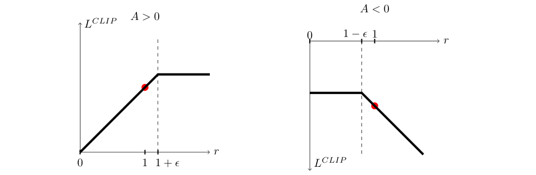
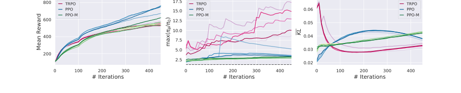

A controlled ablation traced most of PPO's edge to the code around its clip
The clipped objective that defines PPO is still the field's default, but a 2020 ablation holding the implementation fixed located most of its reward margin over TRPO in nine unglamorous training tricks.
Proximal Policy Optimization Algorithms
Read the paperWe propose a new family of policy gradient methods for reinforcement learning, which alternate between sampling data through interaction with the environment, and optimizing a “surrogate” objective function using stochastic gradient ascent. Whereas standard policy gradient methods perform one gradient update per data sample, we propose a novel objective function that enables multiple epochs of minibatch updates. The new methods, which we call proximal policy optimization (PPO), have some of the benefits of trust region policy optimization (TRPO), but they are much simpler to implement, more general, and have better sample complexity (empirically). Our experiments test PPO on a collection of benchmark tasks, including simulated robotic locomotion and Atari game playing, and we show that PPO outperforms other online policy gradient methods, and overall strikes a favorable balance between sample complexity, simplicity, and wall-time.1
One careless update can destroy a policy
A policy gradient tells an agent which direction in parameter space makes good actions more likely. It does not tell the agent how far to walk in that direction. Take one step too large on a batch of noisy returns and the policy that produced those returns is gone. What replaces it collects worse data, which yields a worse gradient, and the run never recovers. Trust region policy optimization answered this by bounding each update explicitly. It maximizes the same surrogate a plain policy gradient uses, subject to a hard cap on how far the new policy may drift from the old one in Kullback–Leibler divergence.2 The bound works, and it is expensive. It requires a constrained optimization solved with conjugate gradients and a line search, and it does not sit comfortably with architectures that share parameters between the policy and value networks or add noise through dropout.2
PPO keeps TRPO's goal, a bounded step, and drops its machinery. The proposal is a surrogate objective you can hand to ordinary stochastic gradient ascent and run for several epochs over the same batch, no constraint solver in the loop.1 It worked well enough that it became the standard on-policy baseline: every major reinforcement-learning library ships a PPO implementation as its reference on-policy method, and reproducing published numbers across them is itself the subject of book-length documentation.3 That dominance is not in question here. What is in question is which part of PPO earned it. Deep reinforcement-learning results are famously hard to attribute. They are sensitive to codebase, random seed, and unreported detail, enough that crediting any one part of the design is a claim to be tested rather than assumed.4 The paper credits its clipped objective. A later group held the surrounding code fixed and measured what the clip was actually doing.
The step becomes a probability ratio
Start with how PPO measures a step. For a state and action drawn under the old policy, the ratio r_t(\theta) = \dfrac{\pi_\theta(a_t \mid s_t)}{\pi_{\theta_{\text{old}}}(a_t \mid s_t)} says how much more or less likely the current policy makes that action than the policy that collected the data. At the start of an update, before any parameters have moved, r_t(\theta_{\text{old}}) = 1. Weighting each action's advantage by this ratio gives the surrogate that both TRPO and PPO start from, the conservative-policy-iteration objective:1
Here \hat{A}_t is an estimate of how much better action a_t was than the policy's average behavior in state s_t. Maximizing this alone is the trap from the last section written as a formula. Where an advantage is positive the objective rises without limit as r_t grows. Gradient ascent will push the action's probability as high as it can, far past the region where the advantage estimate was ever measured. TRPO stops this from outside, with the constraint \max_\theta\ \hat{\mathbb{E}}_t\!\left[ r_t(\theta)\hat{A}_t \right]\ \text{ s.t. }\ \overline{\mathrm{KL}}(\theta_{\text{old}}, \theta) \le \delta.2 PPO's move is to fold the limit into the objective itself, so nothing outside the gradient step has to enforce it.
Clipping turns the ratio into a lower bound
The clipped surrogate takes two copies of each term, one with the raw ratio and one with the ratio clamped to a narrow band around 1, and keeps whichever is smaller:1
- r_t(\theta)\,\hat{A}_tThe unclipped surrogate, the advantage weighted by the full ratio.
- \operatorname{clip}(r_t, 1{-}\epsilon, 1{+}\epsilon)\,\hat{A}_tThe same term with the ratio held inside [1-\epsilon,\, 1+\epsilon], so a policy that drifts further gets no extra credit.
- \minKeeps the smaller of the two, which makes the objective a lower bound on the unclipped one.
The \min is what makes the objective pessimistic. It only lets the clip bite in the direction that would have improved the surrogate. The update is credited for moving a probability the right way only up to the edge of the band, and past that edge it stops gaining. In the harmful direction the raw term is the smaller one and survives the \min, so a bad move keeps its full penalty. The paper states the property exactly: the clipped ratios form “a pessimistic estimate (i.e., lower bound) of the performance of the policy.”1 The two panels of the paper's own figure show the asymmetry directly.

Take one timestep with a positive advantage and \epsilon = 0.2, so the band is [0.8, 1.2]. Suppose the update makes the action 1.3 times as likely as before, so r_t = 1.3. The unclipped term is 1.3\,\hat{A}_t; the clipped term is 1.2\,\hat{A}_t; the \min keeps 1.2\,\hat{A}_t. The objective records no gain for the move from 1.2 to 1.3, so its gradient there is zero and that timestep stops pulling the probability higher. Had the ratio landed at 1.1, inside the band, both terms equal 1.1\,\hat{A}_t and the step is credited in full.1
The objective the optimizer actually runs
The clipped surrogate is the policy term, not the whole loss. PPO shares a network between the policy and a value function, so the quantity optimized adds a value-fitting term and an entropy bonus to the surrogate:1
The advantages \hat{A}_t come from generalized advantage estimation, which reads each step's temporal-difference residual \delta_t = r_t + \gamma V(s_{t+1}) - V(s_t) and sums them along the trajectory with a geometric decay:5
The distinguishing move is what happens with this loss. A plain policy gradient takes one step per batch and throws the batch away, because after one step the data is off-policy. The clip is what lets PPO reuse a batch: because the surrogate stops rewarding drift past the band, the same collected transitions can drive many gradient steps before the policy has moved too far for them to be trusted.1 The loop is short.
-
Collect
Run the current policy \pi_{\theta_{\text{old}}} for a fixed horizon across parallel actors and store the transitions.1
-
Estimate
Compute every \hat{A}_t from the value network with truncated GAE.1
-
Optimize
Run several epochs of minibatch stochastic gradient ascent on the combined objective. On the continuous-control benchmark that is a horizon of 2048, ten epochs, minibatches of 64, Adam at 3\times10^{-4}, \gamma = 0.99, and \lambda = 0.95.1
-
Refresh
Set \theta_{\text{old}} \leftarrow \theta and repeat.1
The paper's own test picks the clip
Does the clip earn its place in that loop? The paper does not assume so; it runs the comparison. Before settling on clipping, the authors built an adaptive alternative that keeps the raw surrogate and subtracts a KL penalty, raising or lowering the penalty coefficient \beta after each update to track a target divergence:1
On seven continuous-control tasks, averaged over 21 runs and scored so that 0 is a random policy and 1 is the best surrogate on each task, clipping at \epsilon = 0.2 comes out on top. The KL variants trail it, and the raw surrogate with no limit at all scores below random, which is the runaway-update failure showing up as a number.1
| Surrogate | Score |
|---|---|
| No clip, no penalty | -0.39 |
| Clip ε = 0.1 | 0.76 |
| Clip ε = 0.2 | 0.82 |
| Clip ε = 0.3 | 0.70 |
| Adaptive KL 0.003 | 0.68 |
| Adaptive KL 0.01 | 0.74 |
| Fixed KL β = 1 | 0.71 |
Read on its own terms, this is a genuine result for the clip. On the paper's task set, with the paper's implementation, clipping is the best of the surrogates it tried, and it is simpler than the KL scheme it beat. The clip does something, and the paper measured it doing it. The question the reexamination asks is not whether that measurement is real. It is what the measurement is worth once the implementation around the surrogate is no longer allowed to vary with it.
What survives when the code is held equal
Engstrom and colleagues took the widely used PPO implementation apart and found that it carries nine optimizations the paper barely mentions or omits: value-function clipping, reward scaling, orthogonal initialization with layer scaling, Adam learning-rate annealing, reward clipping, observation normalization, observation clipping, tanh activations, and global gradient clipping.6 None of them is the clipped objective. To see how much they carry, the group ran a controlled ablation on three locomotion tasks, separating the effect of switching the core algorithm from the effect of adding the optimizations.
| Configuration | Walker2d | Hopper | Humanoid |
|---|---|---|---|
| PPO | 3292 | 2513 | 806 |
| PPO-Minimal | 2735 | 2142 | 674 |
| TRPO | 2791 | 2043 | 586 |
| TRPO+ | 3050 | 2466 | 1030 |
| AAI (step effect) | 242 | 99 | 224 |
| ACLI (code effect) | 557 | 421 | 444 |
The bottom two rows carry the finding. On every task the reward moved more when the optimizations were added than when the core step was swapped: 557 against 242 on Walker2d, 421 against 99 on Hopper, 444 against 224 on Humanoid. Stripping PPO down to its clipped surrogate without the optimizations, PPO-Minimal, drops it below the full method and in line with plain TRPO. Adding the optimizations to TRPO lifts it past full PPO on the hardest task. On Hopper the optimizations alone are worth a 17 percent reward gain to PPO and 21 percent to TRPO.6 The paper states the consequence plainly: the code-level optimizations are “more important in terms of final reward achieved than the choice of general training algorithm.”6
Then they removed the clip itself and kept everything else. PPO-NoClip beats PPO-Minimal on all three tasks, 2867 against 2735 on Walker2d, 2371 against 2142 on Hopper, 831 against 674 on Humanoid, and on Humanoid it edges the full method as well, 831 against 806.6 Grant the reading it supports: with the optimizations in place, a run that never clips matches one that does. The authors grant the limit in the other direction in the same breath. PPO-NoClip “can only express a subset” of what PPO can, since the clipping severity \epsilon is a free parameter PPO still has and PPO-NoClip has given up.6 The honest statement is the narrow one. A tuned run without clipping matches PPO on these tasks. That is not the same as clipping never helping.
The advantage over TRPO happened. The paper's account of why is what the ablations complicate, not the fact of the advantage.
The clip lets the ratio out
The clip has one job stated in its own construction: keep the probability ratio inside [1-\epsilon, 1+\epsilon], the trust region TRPO enforced with a constraint. Engstrom measured whether it does. Over a Humanoid training run they tracked the maximum ratio and the mean KL divergence at every step.

The maximum ratio routinely runs past 1+\epsilon, so the clip does not hold the ratio-based trust region it was designed to enforce.6 The distinction that keeps this claim honest sits in the third panel. PPO's mean KL stays below TRPO's 0.07 bound throughout the same run. The clip fails to bound the quantity it directly clips, the ratio, and the policy still does not wander far in KL. All three methods fail to hold a ratio-based region; TRPO holds a mean-KL one nearly by construction.6 “PPO leaves its trust region” is true of the ratio and false of the KL, and the two are not interchangeable.
The companion analysis takes the gap between design and behavior deeper into the algorithm. In the roughly 2,000 state-action-pair regime standard implementations sample, the estimated gradient correlates poorly with the “true” gradient computed from ten million pairs, sometimes at zero or negative correlation. That correlation degrades as the tasks get harder and training proceeds.7 The value network is no better understood. It solves its supervised regression well, yet the value it learns is off by about 50 percent against the true value function, reducing gradient variance far less than a true baseline would.7 The methods work while the quantities the theory reasons about behave nothing like the theory expects.
A cheap way to get trust-region behavior
Being wrong about why a working method works is a different error from being wrong about whether it works, and only the first is on the table. A third study, larger than either camp's, holds both halves at once. Andrychowicz and colleagues trained more than 250,000 agents across more than 50 configurable choices on five MuJoCo tasks. The PPO policy loss came out best on four of the five environments and best on the two hardest, Humanoid and Ant.8 Their reading of why is the one that reconciles the record. The value comes from the trust-region behavior all the losses they tried share, and clipping is a good, simple way to get it rather than the only way. They recommend the PPO loss with a clipping threshold near 0.25. Their single most surprising finding was that the policy initialization scheme, near-zero initial action distributions, strongly drives performance, which is the same unglamorous kind of choice Engstrom's initialization result had already flagged.8
- PPO is the field's default on-policy method, reproduced as the reference across every major library.3
- Clipping at 0.2 is the best surrogate in the paper's own controlled comparison, and simpler than the KL scheme it beat.1
- A large independent study recommends the PPO loss and finds it best on the hardest tasks.8
PPO advertised the clipped objective as the mechanism that keeps each update inside a trust region, and on the paper's own task set the clip is the best surrogate it tested. The controlled reexaminations leave that intact and relocate the credit. The reward margin over TRPO tracks the surrounding code more than the step, the clip does not hold the ratio region it names, and the trust-region behavior that helps is shared across losses rather than owned by clipping. What would move the assessment is a controlled study showing the clip outperforming a tuned no-clip run once the implementation is held equal, on tasks beyond the MuJoCo suite these results rest on.8
Sources
- Schulman, Wolski, Dhariwal, Radford & Klimov · Proximal Policy Optimization Algorithms
- Schulman, Levine, Moritz, Jordan & Abbeel · Trust Region Policy Optimization
- Huang, Dossa, Raffin, Kanervisto & Wang · The 37 Implementation Details of Proximal Policy Optimization
- Henderson, Islam, Bachman, Pineau, Precup & Meger · Deep Reinforcement Learning that Matters
- Schulman, Moritz, Levine, Jordan & Abbeel · High-Dimensional Continuous Control Using Generalized Advantage Estimation
- Engstrom, Ilyas, Santurkar, Tsipras, Janoos, Rudolph & Madry · Implementation Matters in Deep Policy Gradients: A Case Study on PPO and TRPO
- Ilyas, Engstrom, Santurkar, Tsipras, Janoos, Rudolph & Madry · A Closer Look at Deep Policy Gradients
- Andrychowicz et al. · What Matters In On-Policy Reinforcement Learning? A Large-Scale Empirical Study